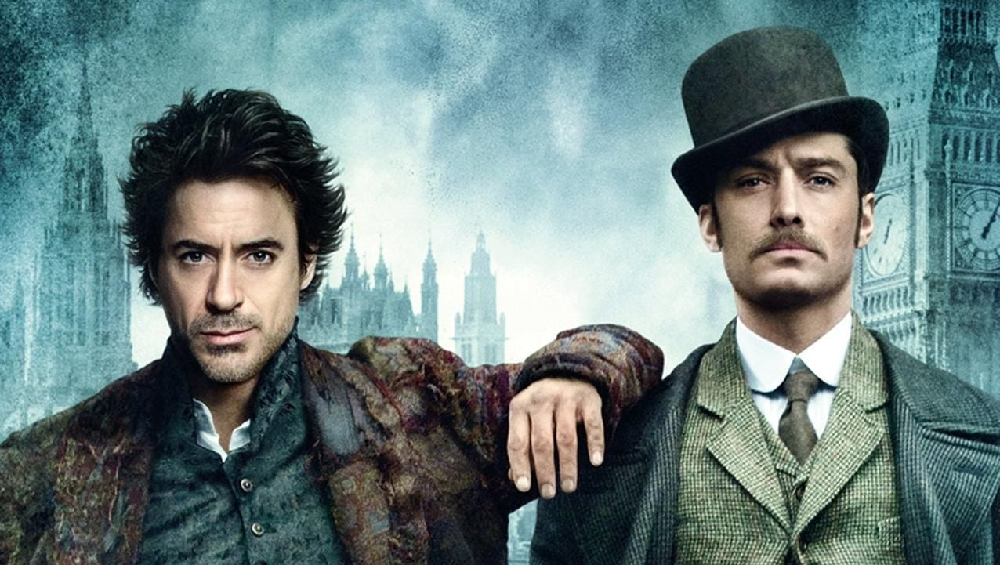

Detective Sherlock Holmes and his stalwart partner Watson engage in a battle of wits and brawn with a nemesis whose plot is a threat to all of England.
After the devastating events of Avengers: Infinity War (2018), the universe is in ruins. With the help of remaining allies, the Avengers assemble once more in order to reverse Thanos' actions and restore balance to the universe.
After being held captive in an Afghan cave, billionaire engineer Tony Stark creates a unique weaponized suit of armor to fight evil.